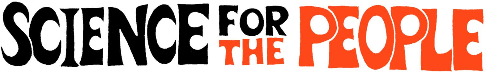
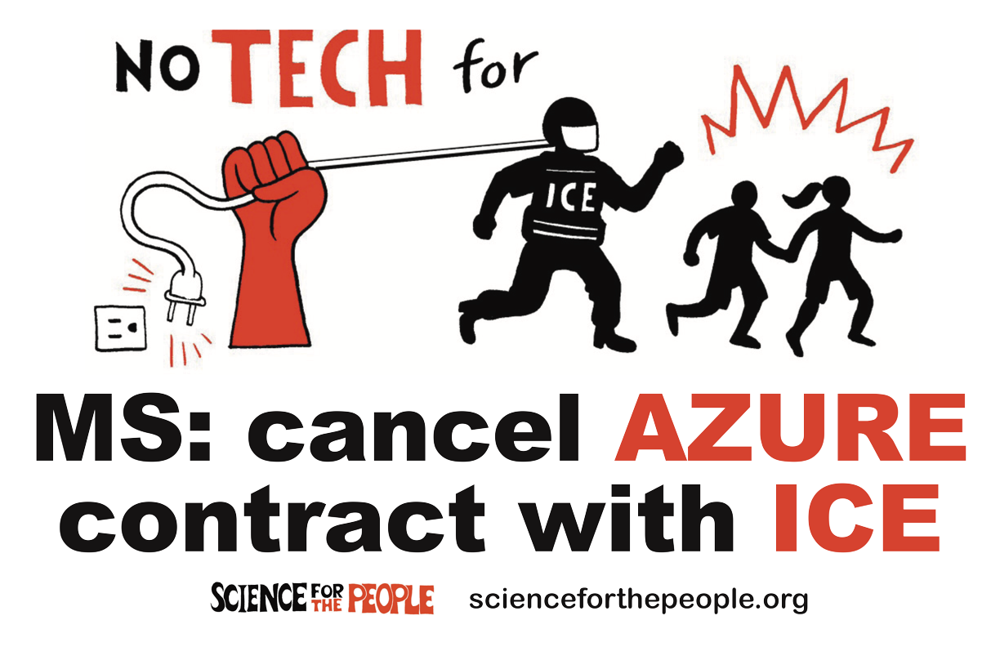

Militarism Working Group
Michael Gasser
SftP Retreat
June 15, 2019
https://megasser.github.io/sftp_retreat/
What is "military"?
- Agencies and contractors
- Department of Defense
- 17 intelligence/security agencies
- Other agencies giving military grants: Departments of HS, Commerce, Energy, Justice, Veterans
Affairs; NASA
- Funding for military projects from NIH, NSF
-
Aerospace and defense contractors
- Tech companies: Microsoft, Google, SalesForce, Amazon
- Purposes
- "Warfighting", "security", "defense",
"counter-terrorism"
- Imperialism
- Policing
- Incarceration and torture
- Surveillance, intelligence gathering
Scientists (and tech workers) and militarism
- Scientists do research for the military; militarism affects
the research that is done.
- Tech workers develop technology for the military.
- The military recruits scientists on campuses.
- The military is deeply invested in STEM education.
- The military is increasingly present in public schools; it is
up to scientists to investigate the effects this has.
The military and research funding
- Applied and basic research
The DoD dominates the world's military organizations in being
able to use basic research results to create new and enhanced
military capabilities, by dint of financial resources,
infrastructure, and national culture. — Defense Science
Board, 2012
- Physics, chemistry, computer science; life science and
medicine; environmental science; psychology; social sciences
- The usual excuses
- What we can do
- Tech WG project: visualization, data analysis, modeling
- Organizing among scientists
Tech workers and military projects
What we can do
- Education
- Solidarity, with Tech Workers Coalition, etc.

The military on campus
What we can do
The military in the schools
- Recruitment
- STEM education, equity/diversity, and the military
"A workforce with robust science, technology, engineering, and
mathematics capabilities is critical to the success of the
U.S. military mission. The U.S. Army Corps of Engineers, the
Department of Defense, and the nation must ensure that there is a
pipeline engaged in STEM and prepared for careers in engineering,
the natural sciences, and research and development." —
Lt. Gen. Thomas P. Bostick, US Army Corps of Engineers
- What we can do
Summary: possible SftP anti-militarism projects
- Organizing among scientists; pledges
- Solidarity with tech workers and teachers opposing militarism
- Education
- Direct action